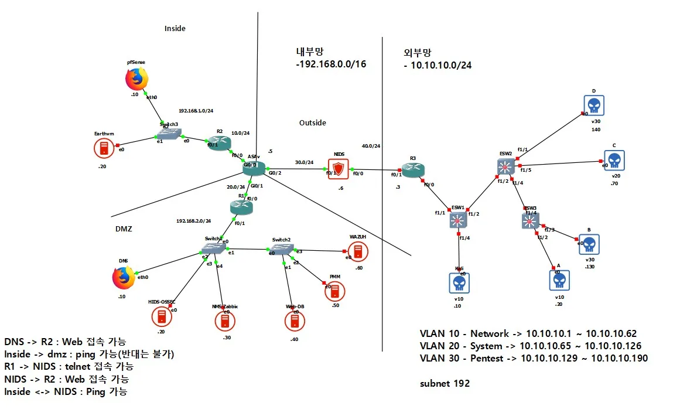
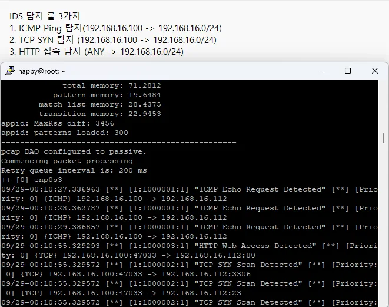
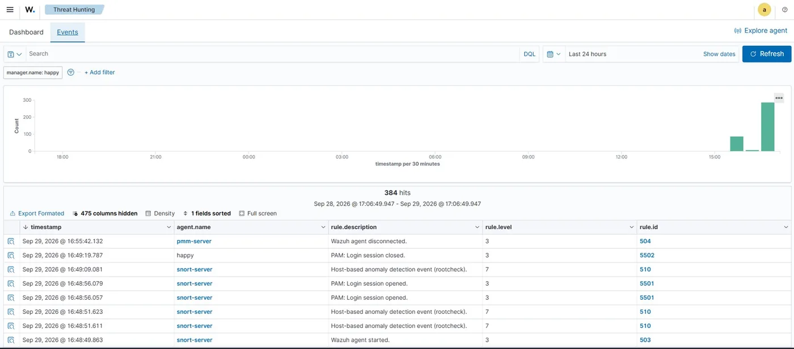

보안 실습 결과보고서 · 혼자 구축하고 결과로 검증
Half-Security Labs — 네트워크 분리부터 탐지·관제까지
- 4 / 4Wazuh Agent Active
- 38424시간 이벤트 조회
- 3 / 3Snort 룰 실탐지
OVERVIEW
GNS3에서 외부망을 /26 단위 VLAN 3개로 나누고 Cisco ASAv로 Inside·DMZ·Outside를 분리했습니다. Snort 3 룰 3개를 직접 작성해 Kali의 ping·nmap·웹 접속에 모두 경보가 뜨는 것을 확인했고, Wazuh Agent 4대를 Active로 연결해 24시간 이벤트 384건을 조회했습니다. rsyslog 기동 실패, OpenVPN 인증서 오류, Wazuh·OSSEC 설치 경로 충돌은 재설치 없이 원인을 좁혀 해결했습니다(아래 3건). Snort는 passive IDS로 동작해 차단(IPS)은 다음 과제로 남겼습니다.
TROUBLESHOOTING · 재설치 없이 해결한 3건
rsyslog가 기동되지 않아 로그를 DB에 모을 수 없음
- 원인
- 수업 자료의 구형 지시자 방식 설정이 설치된 rsyslog 버전의 모듈 선언 방식과 맞지 않았습니다.
- 해결
- 다시 설치하지 않고 설정 → 서비스 → DB 순서로 점검해 원인을 찾았고, 설정을 모듈 선언 방식으로 다시 써서 기동했습니다. 이후 LogAnalyzer에서 DNS 서버 로그를 확인했습니다.
pfSense OpenVPN 클라이언트 내보내기에서 인증서 오류
- 원인
- OpenVPN 서버가 웹 관리용 자체 서명 인증서를 쓰고 있었습니다.
- 해결
- OpenVPN 전용 CA와 인증서로 바꿨고, 클라이언트에 VPN 주소가 할당되며 터널이 연결되는 것을 확인했습니다.
Wazuh와 OSSEC 설치가 서로 충돌
- 원인
- Wazuh와 OSSEC이 같은 설치 경로(/var/ossec)를 씁니다.
- 해결
- 강제로 덮어쓰지 않고 OSSEC Server는 별도 VM에, Wazuh Agent는 다른 서버 4대에 두어 역할을 나눴습니다. OSSEC 변조 탐지와 Wazuh Agent 4/4 Active를 함께 유지했습니다.


